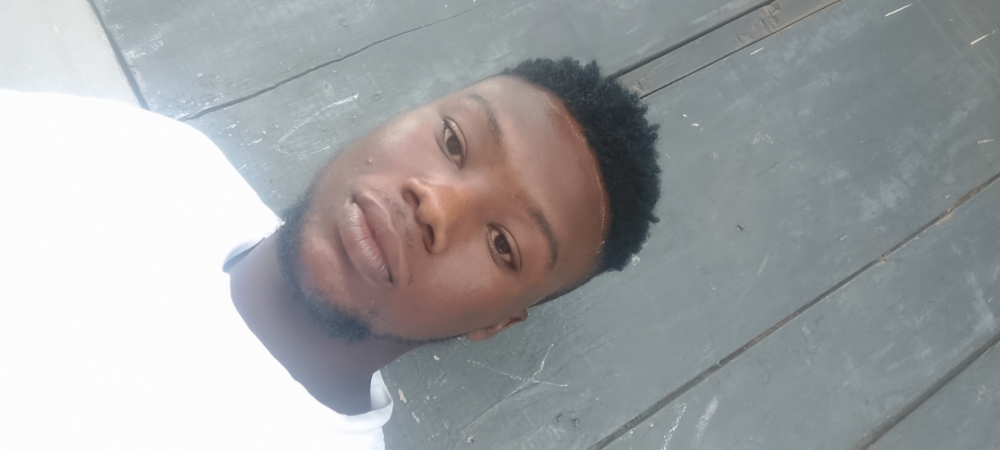
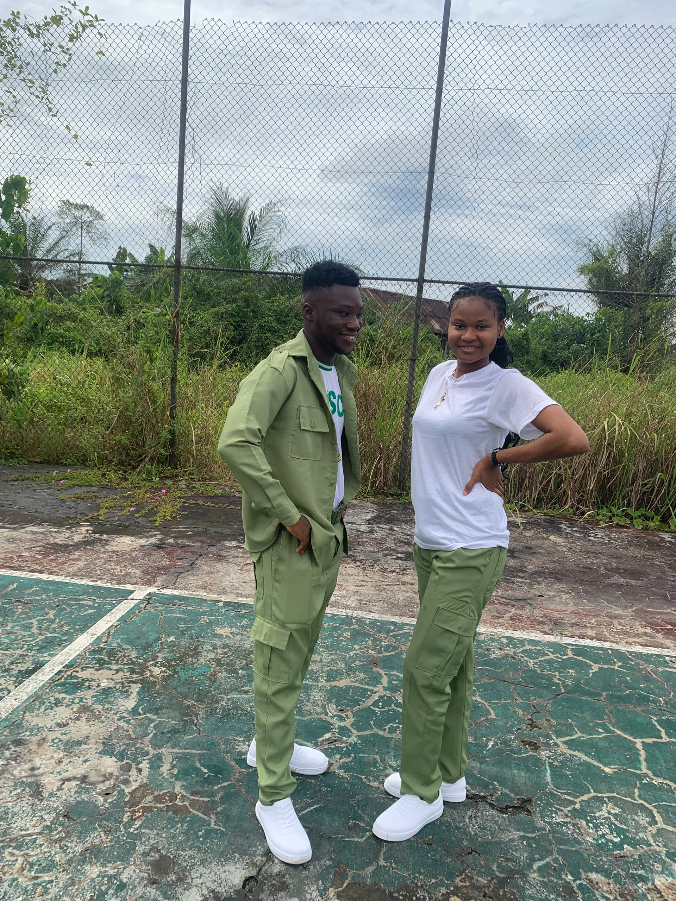
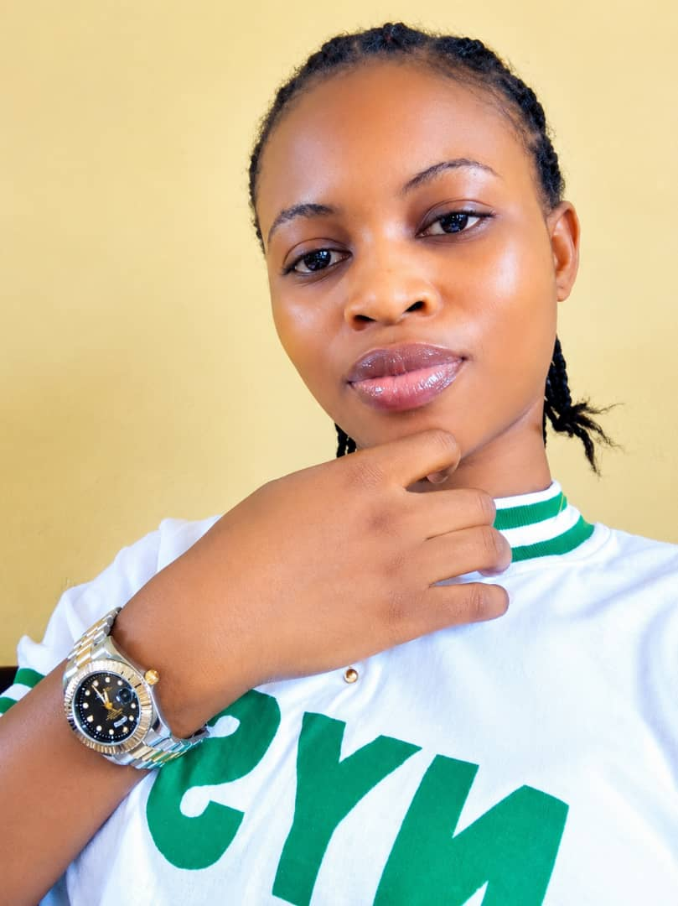
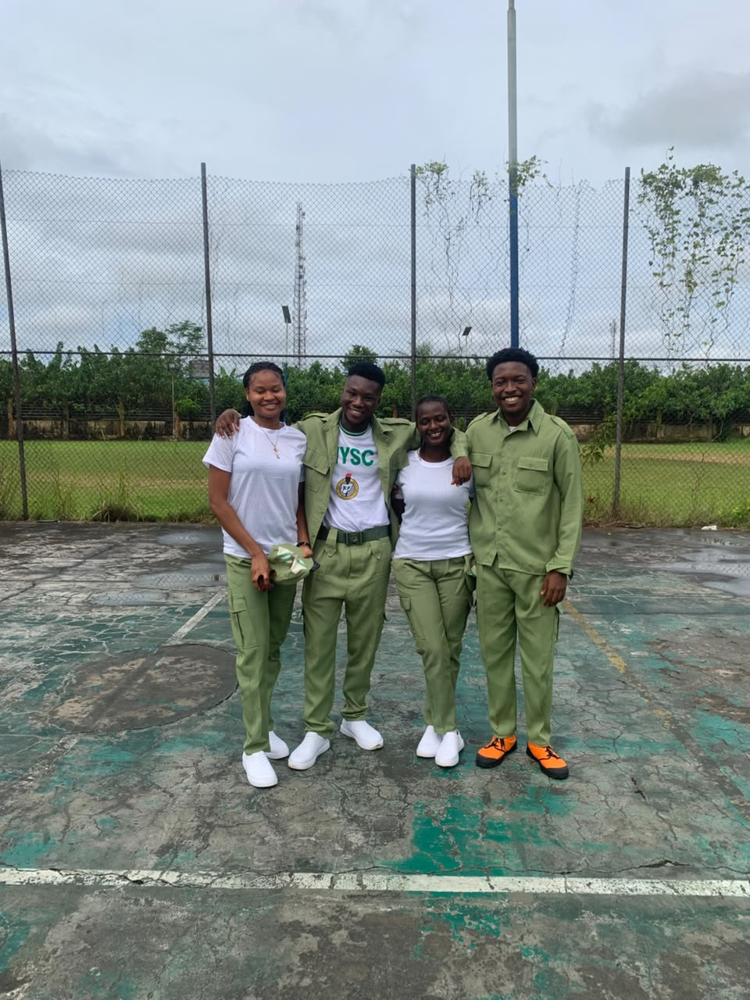
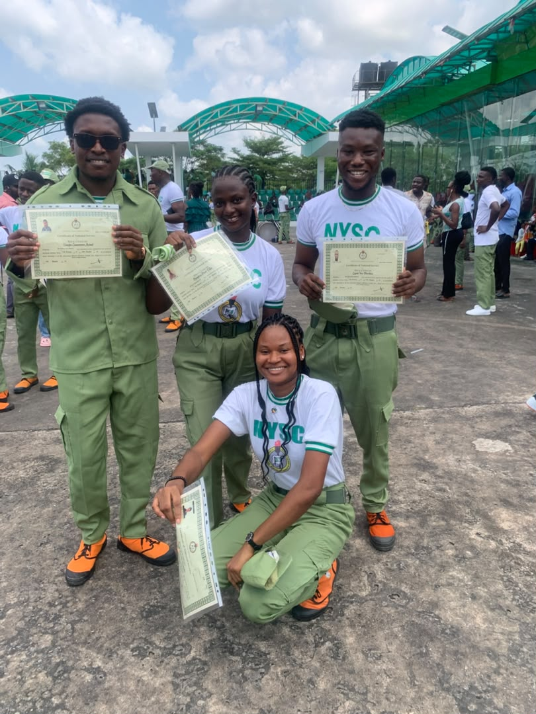

My Personal Website
Chemistry Graduate | NYSC Corps Member | Aspiring Data Analyst
My name is Lagodo Idris. I am a Chemistry graduate with a Second Class Upper degree. I am interested in technology, data analysis, web development, and learning new skills. I enjoy working with people, solving problems, and improving myself.
Education: B.Sc. Chemistry (Second Class Upper)
Experience: NYSC Corps Member and Community Liaison Officer (CLO) in Oruma Community, Bayelsa State.
Training: Microsoft Business Analytics, Simplilearn, and HubSpot Customer Service learning.
These projects help me practise my skills and build my portfolio.
Here are some pictures from my personal and NYSC memories.





Email: lagodookamilekan@gmail.com
Phone:07040533508